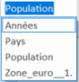

Mise en forme
Remarque : Mise en forme
Mettre en forme du texte et des caractères individuels :
Pour faire ressortir du texte, il convient de mettre en forme tout le texte d'une cellule ou certains caractères sélectionnés. Sélectionner les caractères à mettre en forme, puis cliquer sur un bouton dans la barre d'outils "Mise en forme" ou bien dans le menu "Accueil".
Méthode : Nommer des zones de la feuille
Attribuer un nom aux cellules d'un classeur :
Il est possible d'utiliser (B1 : colonne B ligne 1) les étiquettes de colonnes et de lignes dans une feuille de calcul pour faire référence aux cellules situées dans ces colonnes et lignes. il est, également, possible de créer des noms descriptifs pour représenter les cellules, les plages de cellules, les formules ou les valeurs de constante. Les étiquettes peuvent être utilisées dans les formules qui font référence aux données dans la même feuille de calcul ; Il est préférable d'utiliser un nom évocateur pour représenter une plage sur une autre feuille de calcul.
Pour définir un nom, il faut :
Sélectionner la zone;
[Formule[définir un nom;
Donner le nom à la zone.
Attention :
Un "Gestionnaire de noms" est à votre disposition dans l'onglet "Formules" :
Méthode : Atteindre une zone nommée
Retrouver une zone
Une plage de cellules identifiée par un nom peut être retrouvée :
[Accueil[édition[Rechercher[Atteindre ;
En allant dans la zone nom ;
En utilisant le Gestionnaire de noms.
Méthode : Sauvegarde du document
Choisir le nom et le type du document à sauvegarder
Pour sauvegarder son document, il faut :
Aller dans le menu fichier ;
Choisir enregistrer sous ;
Entrer le nom du classeur dans la case Nom de Fichier ;
Choisir le type de fichier dans la liste déroulante du type.
Une fois ces opérations réalisées, il faut cliquer régulièrement sur l'icône pour enregistrer (ou appuyer sur Ctrl S).
Simulation : Mise en page d'une feuille
Télécharger le tableau de données [xls] issu de la base de données eurostats, effectuer les travaux demandés pour obtenir le résultat suivant :
Sauvegarder le classeur dans le dossier de votre choix sous le nom Eurostat1 ;
Mettre l'onglet "sheet" en rouge et celui de la nouvelle feuille en vert ;
Copier les données en transposant les lignes et les colonnes. Pour cette opération, respecter les consignes données dans l'aide intuitive d'excel (l'expression est transposer des lignes en colonnes) ;
Nommer les titres de colonnes "pays", les titres de lignes "années", les données "population" et les pays de la zone euro 16 pays "zone_euro_16". Au besoin, supprimer les noms existants.
Le résultat de la zone nom doit être le suivant :
Sélectionner une colonne sur 2 pour alterner les couleurs (sélection multiple) ;
Incliner l'orientation du texte pour la zone pays ;
Mettre en gras la zone pays ;
Mettre en italique les années ;
Mettre en italique gras 8 points la population ;
Définir la zone euro_16 et mettre les chiffres de la zone euro 16 en rouge ;
Mettre la zone pays en "renvoi à la ligne automatique", et centré.